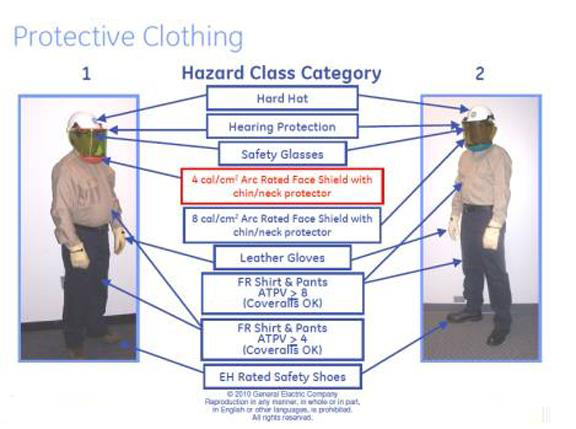

Operating Documentation
Direction 5670006, Rev# 1
Discovery MR750w GEM Service Methods
Module Version 3.0, Version Date 6/22/11
Operating Documentation |
This document defines general guidelines, LOTO steps, and minimum Personal Protective Equipment (PPE) required for arc flash avoidance when servicing the MDP. Hazard Class 2 PPE must be used unless superseded by local regulatory requirements.
Arc flash may occur when de-energizing or re-energizing electrical equipment. Precautions must be taken during both actions.
Comply with local regulatory requirements.
Follow PPE requirements per any arc flash labeling present on the equipment. If no labeling is present, use Hazard Class 2 PPE defined in the Personal Protective Equipment (PPE) Requirements section, below.
Do not perform any task without required PPE and training in use of the PPE.
If you do not have the required PPE, proper qualifications, or required training to perform any task listed in this service note, advise your supervisor. Arrangements will be made to have the work performed by qualified personnel.
When performing the procedures outlined in the Overview section of this service note, follow the Lock Out/Tag Out procedure including the steps below:
Shutdown the MR System Software per procedure.
De-energize the switch ahead of the MDP and Apply Lock Out /Tag Out.
Wear the appropriate Arc Flash PPE, Hazard Class 2 (if applicable), or take the precautions as required by local regulatory requirements. Always follow local PPE requirements.
De-energize MDP.
Verify zero-energy.
Before re-energizing the electrical panel, wear the appropriate Arc Flash Equipment, Hazard Class 2 (if applicable), or take the precautions as required by local regulatory requirements.
This section lists the Hazard Class 2 PPE used, if required.
Cotton underwear (short sleeve shirt and briefs/shorts).
Flame resistant pants and shirt (ATPV Arc rating min 8 cal/cm2).
Safety Glasses.
Safety Shoes.
Hearing Protection.
Class 0 rated gloves with Leather Protectors.
Arc rated helmet with face shield.
| NOTE: | Arc Thermal Performance Value (ATPV), a measure to assess Flame Retardancy of clothing, is not recognized as a measurement criterion in the EU. Any PPE used in the EU must have a CE rating. Always follow local regulatory requirements. |
Illustration 1: Protective Clothing
